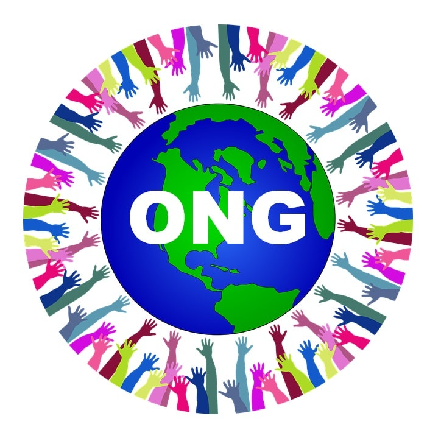

Las entidades que se conocen bajo el término ONG llevan existiendo desde hace siglos, pero fue en el siglo XX cuando realmente empezaron a cobrar una importancia global. En este artículo te explicamos concretamente qué es una ONG y para qué sirve, los distintos tipos de ONG y las funciones que puede tener asociadas. Para saber qué significa una ONG, solamente tenemos que identificar lo que representan literalmente sus siglas: Organización No Gubernamental. Es decir, una entidad de iniciativa social que tiene fines humanitarios, que no depende de la administración pública y que no tiene afán lucrativo.
Si bien la definición de una ONG es bastante conocida, no tanto los diferentes tipos que hay de estas entidades. Por lo general se clasifican en base a su orientación y a su área de influencia. Según su orientación diferenciamos cuatro tipos de ONG:
ONG de caridad: aquellas cuyas actividades se enfocan a apoyar a colectivos en vías de desarrollo, aportando herramientas para el autoabastecimiento para evitar su dependencia.
ONG de servicios: aquellas que centran sus actividades en aprovisionar de salud, educación o planificación familiar, entre otros servicios.
ONG participativas: aquellas que desarrollan proyectos de autoayuda en comunidades locales.
ONG de defensa o empoderamiento: aquellas que sirven para impulsar un cambio en el sistema político-social o económico.
